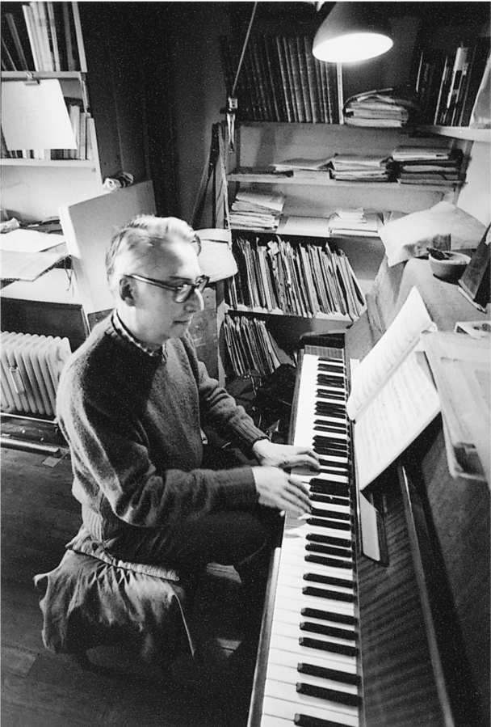
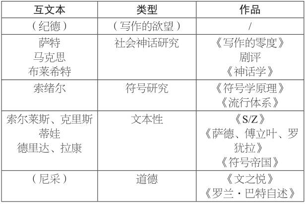
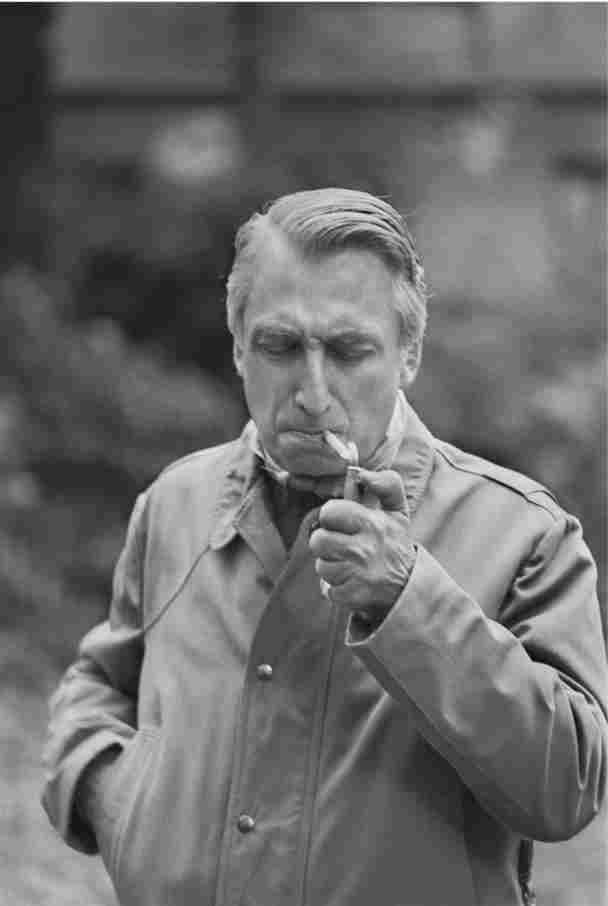

巴特宣称：“我没有传记，或者应该说，自从我写下第一行文字开始，我就不再看见我自己。”虽然他回忆并描述了他的童年和青少年时光，但从那以后，“一切都经由写作发生”（《访谈录》，第245/259页）。他不仅对自我进行了敏锐的反思，而且流露出自我贬低的倾向，这些思考以多种多样的想法、宣言和观点的形式表现出来，这是一些不稳定的片段集合，缺乏一致性或中心点：“我所写的那个主体缺乏一致性”（第283/304页）。《罗兰·巴特自述》在两种观点之间摇摆。一方面，它抱怨“书写自我”会以虚构的内容取代自我。“在语言之中自由翱翔的时候，我不知道该把自己比作什么；……符号变成了直观 的对于主体生命的重要威胁。书写自我看起来是个很自大的念头，但同时它也是个很简单的想法，和自杀的念头一样简单”（第62/56页）。但另一方面，这些片段也得出结论——在虚构背后，一无所有：自我是一种话语建构；“主体仅仅是语言的效果”，一个由字母组成的自我（第82/79页）。“我是否知道，在主体的领域内，不存在指 称对象 ？……我就是发生在我身上的故事”（第60/56页）。对于他本人，也对于我们大家来说，巴特是文本的集合，不可能通过明确哪一种说法或观点属于真正的“巴特”来消除其中的对立或矛盾——除非“巴特”本身就是用来梳理这些片段的一种建构。
说巴特是个文人，是因为他的人生是写作的一生，是一段和语言共同经历的探险，但到了生命的晚期，巴特扮演了传统意义上的文人角色。他代表着“文学价值”：他热爱语言，尤其是那些精妙的措辞和丰富的意象，他能敏锐察觉客体和事件的心理暗示，他对于各种文化生产满怀兴趣，并且坚持精神生活的重要性。他不仅是个批评家，还是个文学人物。对于他的同时代人来说，他关于文化问题所做出的论断代表着一种文化和美学态度。当他和记者谈起懒散的时候——他生命里接受的最后几次访谈之一就叫作“敢于懒散！”——有理由相信他会给出优雅、新奇的说法，他的话总是带着理论的活力，还有睿智的鉴赏力和对于精神价值的关注。他定期为新书或展览目录撰写序言，讨论食物，看歌剧表演，弹钢琴，回忆童年。 [23] 在法兰西学院的就职演说中，他声称“伟大法国作家的神话，寄托所有高雅价值观的神圣形象，已经瓦解了”，一种新的类型已经出现，“我们不再知道——或者说现在还不知道——究竟该如何命名他：作家？知识分子？撰稿人？无论如何，文学的掌控 正在渐渐消失。作家不再占据舞台中央”（第40/475页）。巴特本人或许就是这种新型人物，他以放弃掌控的方式来获取权威，他提倡“新鲜体验”：借助当代理论语言，以片段的形式来探索思考和生活的经验。
巴特的最后一部作品《明室：摄影札记》表明，他扮演着文化评论员的角色。他吸收消化了专业知识，强调他对于摄影的思考只限于他的文学文化、他的敏锐观察和他的人生体验。他决定要从他母亲的一张照片里“得出摄影的全部内容”，对于他来说，这张照片代表着母亲“变成了她本人”。他把摄影与爱和死亡联系在一起，雄辩而又敏锐地分析了他对于母亲近期去世这一事件的反应：“我所失去的不是一个人物形象（母亲），而是一种存在；不是一种存在，而是一种品质 （一个灵魂）：不是不可或缺，而是不可替代。我可以在没有母亲的情况下继续生活（我们迟早都要这样做），但剩余的生活将绝对地、完全地缺乏品质 ”（第118/75页）。
他总结道，照片说“这曾经存在过”，“照片的本质在于认可它所代表的对象”（第133/85页）。在这种写作模式中，巴特以一种平和的方式代表着文学鉴赏力所能获得的“智慧”或洞见。《新闻周刊》的一篇书评注意到了这种模式的魅力，它称赞了这本“伟大的著作”所蕴含的充满激情的人文主义思想：“巴特引领读者踏上一段精致的、充满激情的旅程，去寻访他本人的内心和他所爱的媒介，这种媒介一直试图表现人类生存状况中那‘难以企及的现实’。”
罗兰·巴特，这位资产阶级神话的批评者，是如何走到这一步的？在《罗兰·巴特自述》中，他描述了一种机制，并提出了一种发展轨迹：
第75/71页

图15 巴特弹钢琴。
在最初阶段，他想要改造符号：他一直重复“我指着我的面具前进”这句话（《写作的零度》里就提到了三次），把它视为意指实践的理想格言。关于符号的科学研究把当代研究中最有趣的分支整合在一起：“精神分析、结构主义、遗觉心理学、一些新的文学批评（巴什拉率先提供了若干实例），这些研究不再单纯关注事实，而是分析那些具有意指性的事实。现在提出一种意指性，就是向符号研究寻求帮助”（《神话学》，第195——196/111页）。但建立一种符号研究的方案确定之后，巴特的反应却把他的作品变成了对于科学的“反写作”。他试图建立的元语言现在被视作给定物：为了给理论“松绑”，他接管了这些术语，把它们与大多数的界定性差异区分开来，推动它们进入其他关系。文 本 ——巴特所使用的魔力词汇之一——现在代表着一个无法掌控的客体，一个考察意指关系的持久视角。文本源自之前的话语，它与文化的全部内容有关。读者概念和文本概念一起构成了一对无法掌控的范畴：针对任何想要通过分析来掌控文本的企图，人们都可以通过强调读者的关键作用来予以回应——在读者所生产的意义或结构之外，不存在意义或结构。但是反过来，针对任何想要把读者作为（心理）科学分析对象的企图，人们也可以强调，文本能打破读者最确定的假定，使读者最具权威性的策略落空。

图16 互文本、类型和作品的示意表。
在《S/Z》之后，巴特对于文学的看法有一个显著特征，那就是在他的论述中，读者和文本可以轻易地互换位置：读者建构文本的故事反过来就变成了文本操纵读者的故事。在为《万有百科全书》所撰写的“文本理论”条目中，他写道：“是文本在不懈工作，而不是艺术家或消费者。”在下一页他又回归了第一个立场：“文本理论消除了对于自由阅读的所有限制（授权[读者]以完全现代的视角来解读过去的作品……），但它同时又坚持认为，阅读和写作具有同等的生产效力。”一方面，他认为读者是文本的生产者；另一方面，他又把文本描述为这些活动中的控制力量。结果就是，他没有采用系统性研究视角，而是把注意力都放在读者与文本之间的交互作用上。 [24]
巴特的写作转向了身体和日常生活的愉悦，这是一次重要的移位。至少，他在这个新阶段的写作主题和模式让他变得与曾经遭他抨击的资产阶级品味更加融洽。“愉悦”、“魅力”和“智慧”等新词减少了智识的威胁性，而新的主题——爱的忧伤、童年回忆、对母亲的依恋以及乡村生活——让法国公众发现，原来巴特还是个作家。谁能想得到，那个曾经带头高呼“作者之死”的罗兰·巴特如今居然在法兰西学院开设讲座，讨论法国经典作家的习惯（巴尔扎克的晨袍、福楼拜的笔记本、普鲁斯特的软木贴面的房间）？而且他还说，他的著作并不属于这样或那样的总体设想，而是体现了他的个人欲望。或许我们可以通过他最喜爱的螺旋形象来描述这一奇怪的现象：之前被他拒绝的种种态度重新出现在他的写作中，但出现在另一个地方，在另一个层面上。当他声称他反对所有体系的时候，他很像是那些传统的文学研究者，年轻时的罗兰·巴特曾遭到他们的轻蔑指责，他们认为他缺乏敏锐的洞察力，只知道把复杂的现实简化成几个概念。在《明室：摄影札记》中，巴特声称，“关于我自己，唯一能确定的是，对于任何简化系统的竭力抗拒”（第21/8页），他似乎已经忘记了系统的策略功能，即系统能够避免人们沦为文化领域中无人注意的、“自然的”公式化形象。
巴特当然注意到，他后来的主题和态度对于他曾经试图改变的文化传统来说弥足珍贵，但他将此视为另一种违抗，一种力图打乱知识分子正统的努力。“把一点情感 重新引入业已被打开、认可、解放和探索的政治——性话语当中，这难道不是最终的违抗吗？”（《罗兰·巴特自述》，第70/66页）。人们可以认为，巴特的作品营造了一种思想氛围，使得他可以把传统的话题作为一种先锋派的违抗行为重新引入其中，但还存在几个问题使人们难免质疑他的最终阶段能否算作激进。
首先，自然轻易地回到他的作品中：主要借助身体作为掩饰，另外也作为哲学中“不可触及的指涉物”，它就在那里 ，具有权威，不容置疑。巴特的评论著作和分析著作一再流露出将自然置于文化之下的企图，并且试图为人们的行为和阐释寻找一种自然依据。但到了后来，他越来越依赖于一种话语法则：当你揭示自然其实是文化产物，并且将它从一个地方驱逐出去的时候，它重新出现在了其他地方。
其次，巴特从他宣称放弃的系统性努力中获益良多；如果他能够认识到这些收益的话，或许人们能够更好地接受他的背弃做法。如果他那些简短的思考没有以多种方式——按词汇或明确的主题排列——与他赖以成名的系统性分析联系在一起的话，他就不可能作为一个专写片段的作家而取得成功。《罗兰·巴特自述》中的思考之所以引起激烈反响，正是因为他用新的方式使用了熟悉的术语——给这些术语曾经协助创立的理论松绑。巴特的作品总是不完全的：他只提供项目、纲要和视野。当他把残缺作为一种优点的时候，就像在《S/Z》里那样，他就显得让人恼火，因为对于代码的深入研究事实上强化了一种巴特式的分析。在他的后期作品中，他厌恶体系，这显然是在抗拒权威，但也可以被解读为自私、自满——就好像他把懒散当作一种抵抗权威的策略，于是他就照着自己的建议去做：“敢于懒散！”
第三，巴特的作品日益推动着一个强大的神话，那就是“免除意义”。在《罗兰·巴特自述》中，他写道：“很显然，他梦想着一个免除意义 的世界（就像免除兵役）。这始于《写作的零度》，在这本书中他想象‘全体符号的缺席’；随后，他一再重申了这一梦想（论先锋派文本，论日本，论音乐，论亚历山大诗体等等）”（第90/87页）。这个梦想无处不在，它并不是追求无意义，而是呈现空洞意义的形式。作为一个批评概念，这个梦想一度具有重要的战略意义——别的且不论，至少它鼓励一种寻求理解形式的诗学，而不是一种寻求意义的阐释学——但在他的后期作品中，巴特转而支持那些传统的、前符号研究的概念，并且把这看作一种违抗。他声称，照片仅仅代表曾经存在的事物：他回忆起一张奴隶的照片，照片里“奴隶制没有经过任何中介，直接呈现在眼前；事实不必借用任何方法，直接得以确立”（第125/80页）。这恰恰是《神话学》分析过的另一张照片所使用的借口，在那张照片中，一名黑人士兵朝着法国国旗敬礼。巴特批评了那张照片的虚伪，认为它假装没有经过任何中介，直接呈现事件（它的借口 是，向法国国旗敬礼的黑人士兵确实存在），并且轻松地做出论证，认为那张照片已经加入到法国文化的意识形态体系中。
巴特察觉到，在这里存在一个问题。题为“免除意义”的片段继续写道，“古怪的是，公众恰恰认为应该存在这样的梦想；信念同样不喜欢意义……它用具体 来反抗意义的入侵（知识分子必须对此负责）；所谓具体，就是人们认为理应抗拒意义的事物。”但或许这并不奇怪，这两个例子其实体现了同一个神话，只不过随着这个神话在巴特的作品中螺旋式地回归，它获得了更为雄辩的表述。巴特认为，他并不是在重复这一神话：他并不是在寻求先于 意义的条件，而是要想象某个超越 意义的条件（意义背后的某个事物）：“要想削弱意义，免除意义，就必须横跨全部意义，就像在加入秘密社团时要经历全部的考验。”在他关于文学的大多数作品里都提到了这一区分，但当他转向摄影的时候，他想到的不是一种清除意义后的空洞，或者对于文化代码的干扰，而是先于意义就在那里 的状态。他挑战所有关于意义的最令人信服的论述，也包括（或者说，尤其是）他本人之前的作品，从而重新肯定了他曾经教我们抗拒的那种神话。那个曾经提出我们无法脱离意义的符号研究者，如今却日益倾向于寻找能够逃脱文化代码的自然空白，但我们或许不必对此感到惊讶。

图17 左撇子。
在重新回归（但出现在另一个地方）的众多事物中，还有19世纪的传统文学。巴特起初是实验文学（福楼拜、加缪、罗伯——格里耶）的支持者，对于那些舒适易懂的文学作品，他要么把它们放到一边，认为它们没能尝试语言实验，要么对这些作品赖以运作的文化代码持批判态度。但到了后来，那些作品作为他的最初爱好，同时也作为他在法兰西学院开设的讲座的主题，又重新回到他的视野中。他的整个设想甚至可以被看作一种迂回策略，目的在于打破学院派对于19世纪文学的控制，由此他可以重新引入这些文学作品，不是作为知识或研究的对象，而是作为愉悦的对象，作为一种悄然进行的违抗的根源。《S/Z》和《文之悦》把先锋文学作为范式，提倡一种新的阅读实践，以此来揭示巴尔扎克、夏多布里昂、普鲁斯特等人作品中的过度、复杂和颠覆。《恋人絮语》使《少年维特的烦恼》那种感伤和过时的话语重新引起当代读者的兴趣。这不是一般的成就，只有通过理论争辩来打破传统批评对于文学的掌控，才有可能做到这一点。下面这段雄辩的言论出自巴特的法兰西学院就职演说：
第475——476页
没有哪个单一的理论规划能帮助我们了解这个怪异的时刻（曾经被否定的事物重新出现），只有巴特一连串各具特色的设想能做到这一点；只有那些迥然不同的写作才有可能创造出愉悦、理解和复兴。